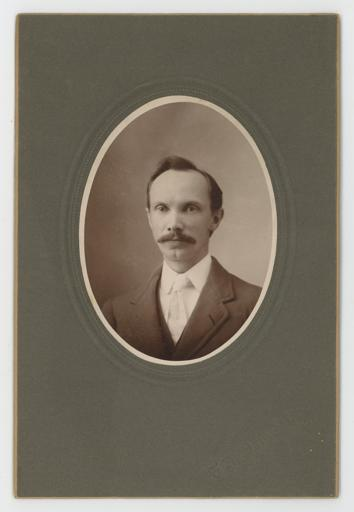
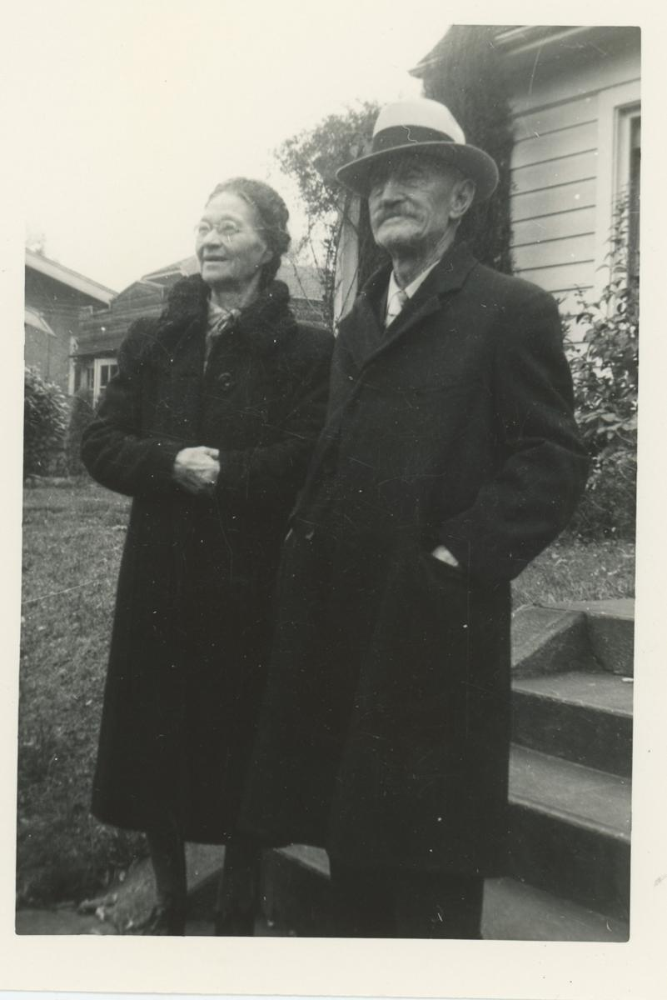

Thomas Edward Hartley
T. E. Hartley
- brick-wall
- railroad
- Born
- 1840~ - New York 1
- Married
- 1871-02/1871-03 - Fairview 2
Family
Ancestor fan
Biography
Thomas Hartley spent most of his adult life in Fairview, Kansas, where the 1880 census records him as a bookkeeper for the Plains Junction Railroad 1, living with his wife Margaret and their children 1.

Timeline
1840s
- 1840~ - birth: Thomas Hartley born about 1840 in New York @ New York 1
1870s
- 1871-02/1871-03 - marriage: Thomas Hartley married Margaret A. Cole, Fairview, Feb/Mar 1871 @ Fairview 2
1880s
- 1880-06~ - residence: Hartley household residing in Fairview, Kansas (1880) @ Fairview City, Breton, Kansas 1
- 1880-06~ - occupation: Thomas Hartley - occupation: bookkeeper, Plains Junction Railroad @ Fairview City, Breton, Kansas 1
- 1880-06~ - relationship: Ethel Hartley is a child of Thomas Hartley and Margaret Cole 1
- 1880-06~ - relationship: Frances Hartley is a child of Thomas Hartley and Margaret Cole 1
- 1880-06~ - relationship: Thomas Hartley is a child of Caleb Comstock Hartley and Chastina Augusta Reed 1
- 1882 - relationship: Member, Fairview Masonic Lodge No. 12 (1882 roster) 3
- 1882 - relationship: Thomas Hartley and Charley Layng were fellow lodge members (associates) 3
- (undated) - relationship: Calvin George Hartley is a child of Thomas Edward Hartley and Margaret A. Cole 4
Research Notes
The 1880 census gives his birthplace as New York, but no county or town has been confirmed - the next step is the 1850/1860 New York state censuses for a Hartley household matching his age.
Friends & Family
Parents
- Caleb Comstock Hartley
- Chastina Augusta Reed
Spouses
- Margaret A. Cole
Children
- Calvin George Hartley
- Ethel Hartley
- Frances Hartley
Associates
- Charley Layng